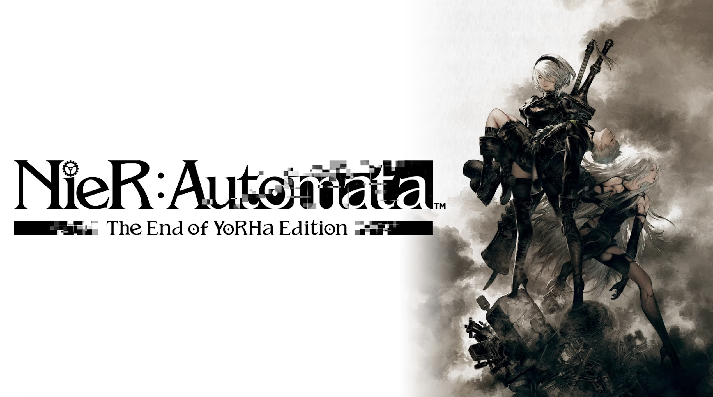
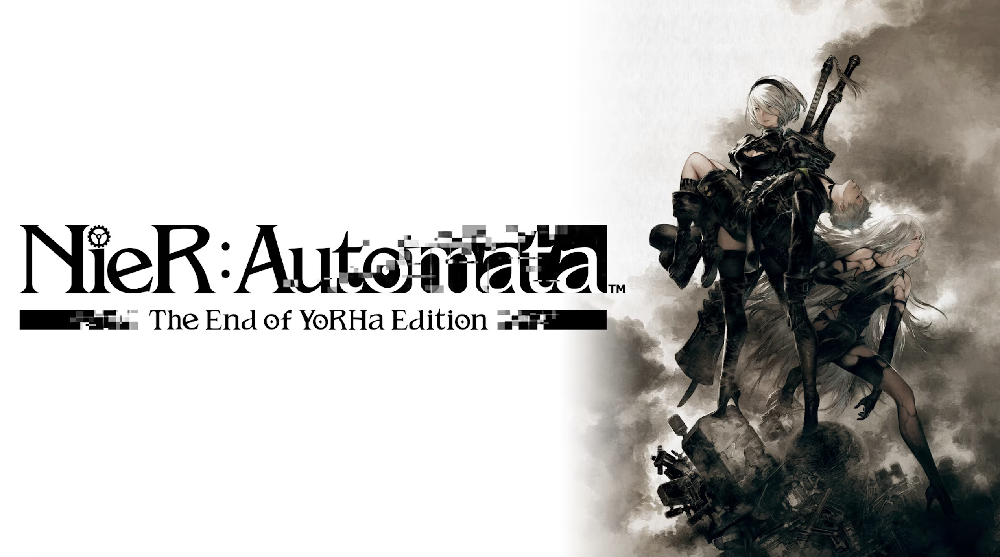
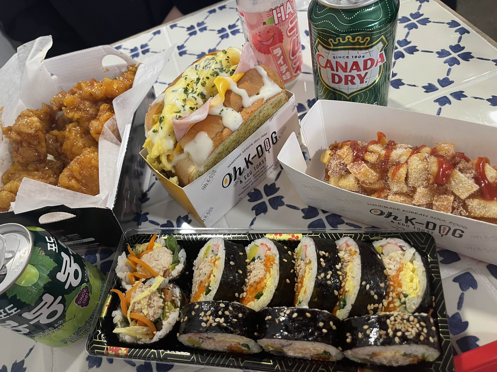
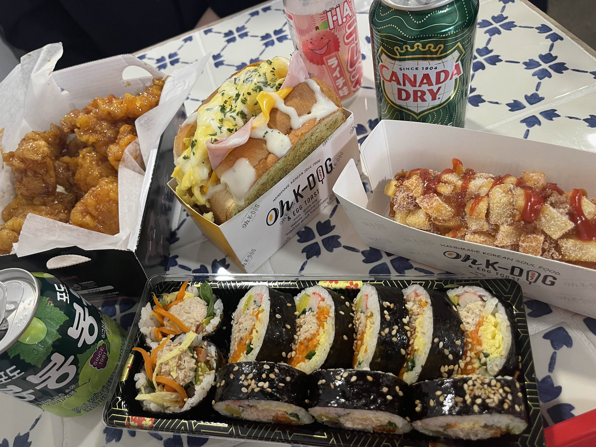

I earned my degree in Computer Science and Design from Northeastern University May 2023. I started off my first semester as a Computer Science major and stumbled upon UX/UI design in my second semester.
I enjoy designing interactions that allow others to have a fulfilling experience. I am passionate about learning new design techniques and perspective of other designers.
In 2022, I did a co-op at Tamr Inc. for 8 months as an associate UX Designer/Researcher. Currently, I'm learning HTML/CSS and I'm coding this portfolio as I'm learning.
I enjoy...
I enjoy playing games like Genshin Impact, Honkai Star Rail, and Zenless Zone Zero. I play many co-op games with my friends such as Deep Rock Galatic, Left 4 Dead 2, R.E.P.O., and Lethal Company. I also like playing visual novel games like Volcano Princess, Omori, and NieR: Automata.

 

I started journaling as a kid by writing about what I did throughout the day. I would only stick with it for a few days before forgetting about it—repeat the process throughout the years. During my senior year of high school, did an inquiry project about metacognitive journaling, which inspired me to pick up journing again after doing an inquiry project about metacognitive journaling during my I've been journaling ever since.
One of my favorite things to do is reading. If I'm not gaming or journaling, you can find me reading a novel or enjoying a webcomic. In middle school, I would go to the library every week to borrow 15 to 20 books. In December 2024 I bought a Kindle and I have been reading a lot more in my free time.
# of books read in 2025: 112
As of 5/21
Throughout high school, I drew a lot of cartoon and anime characters. I mostly drew characters from Steven Universe, Fairy Tail, and The Legend of Korra. One day, I hope to draw my own comic with developed characters and an interesting storyline. Now a days, I do quick sketches or doodle in my journal.


I played basketball on my high school team for 3 years. I still enjoy playing whenever I can.
Dabbled in photography, mostly taking photos of landscape and food.


 


💫 Designed and coded by Samantha Liu 2024.